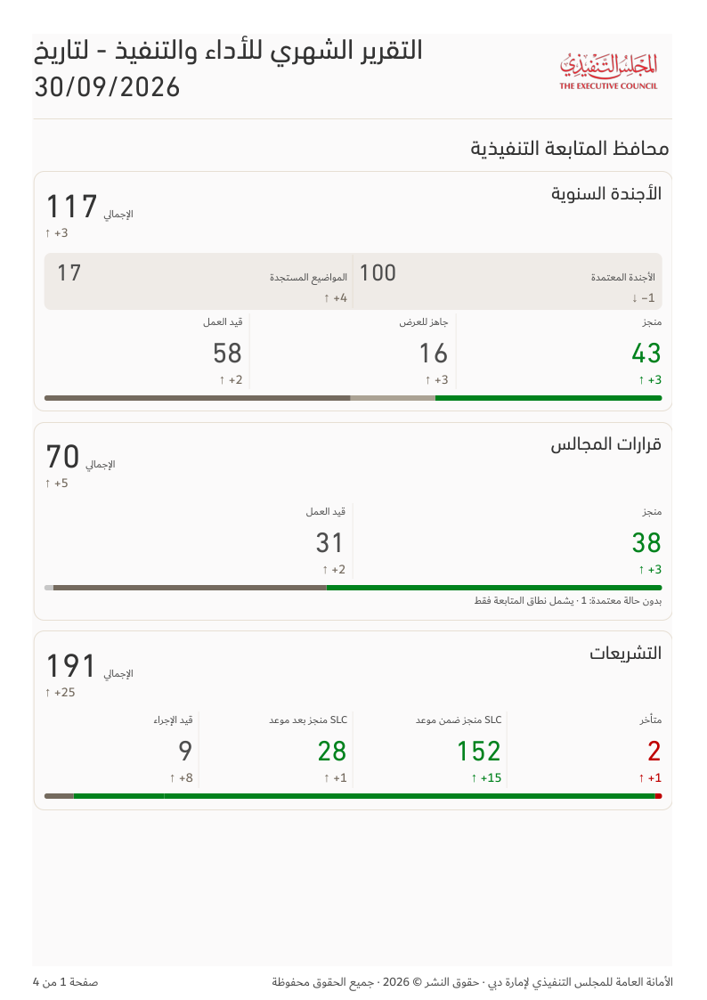
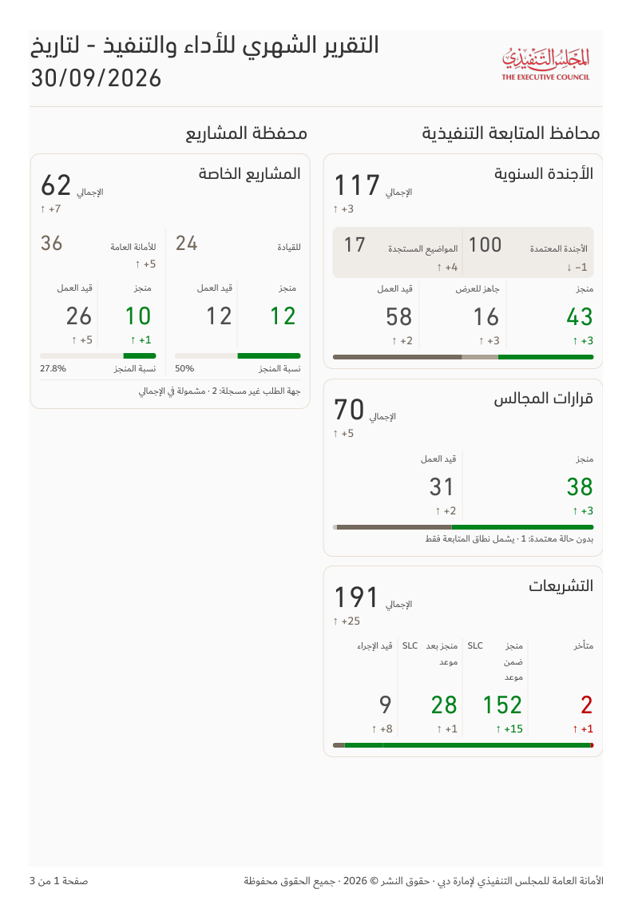
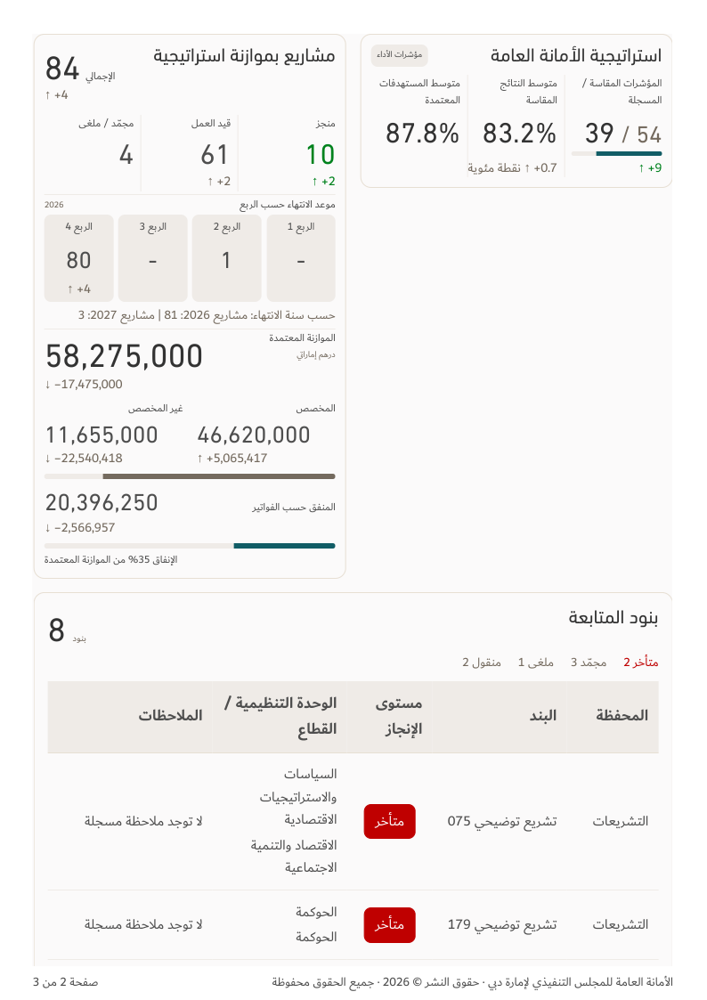
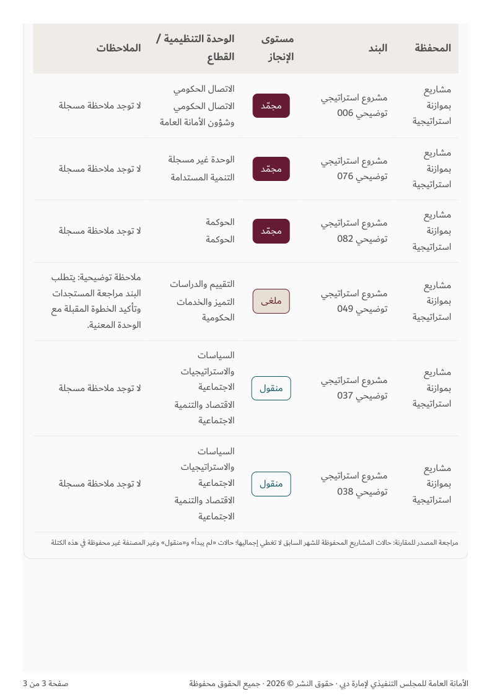
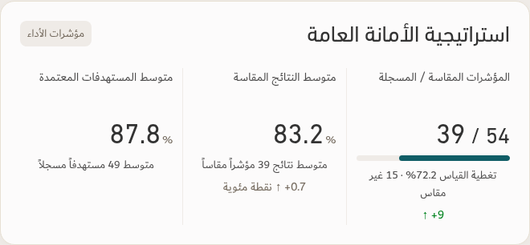
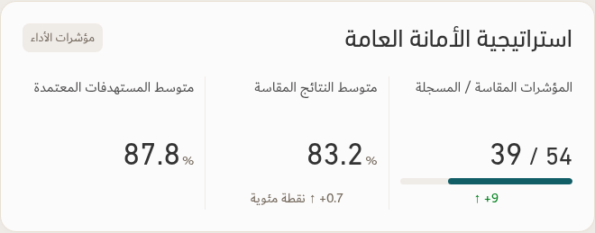
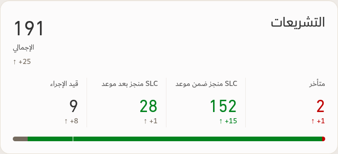
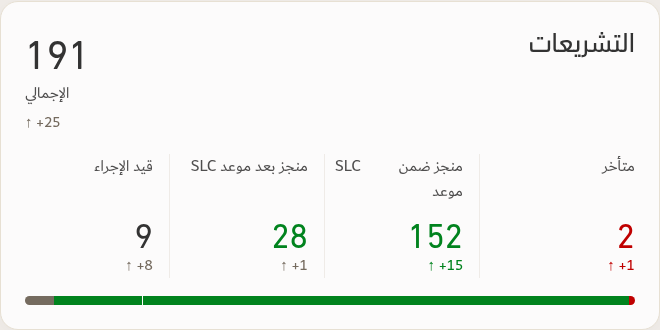

Same illustrative workbook on both sides · A4 portrait · native print scale · approved TEC fonts. Page count follows content.


Cards continue whole when they fit; the follow-up table spans the full page width below both portfolios.






| Element | Screen | |
|---|---|---|
| Monthly short metric/status labels and strategy names | 16px Dubai Regular | 9pt Dubai Regular |
| Table names, content, notes and status badges | 16px Dubai Regular | 12pt Dubai Regular |
| Table headings | 18px Dubai Bold | 13.5pt Dubai Bold |
Only the monthly composition changes. Agenda/council/HH remain A4 landscape; all other document orientations and source calculations are retained.